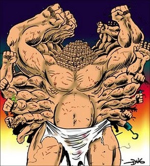

Feeding the 100 Armed Giant
Rob Miller
Firefox Measurement Team
rmiller@mozilla.com
@n0nsequitarian
Thanks for having me!
Today I'm here to talk about...
Heka
Heka is a data processing tool
Similar to Riemann
Built for Mozilla
You might find it useful too
Hekatonkheires

- 100 arms
- 50 heads
- Ugly
- Child of Earth and Sky
Hekatonkheires
- 50 heads == 50 gaping maws
- One pair of arms for each mouth
- Nom nom nom
-
According to Virgil's Aeneid...
Patron Deity of Stream Processing
Hekatonkheires
- tonkheires
= Heka
Heka eats data
What do we know about data?
Research
Yahoo!ed "data"
About Data
- It's blue
- It's made of ones and zeroes
- It surrounds the Earth
About Data
- Comes in many different shapes
- Often poorly formed
- People want to:
- Input / "Extract"
- Process / "Transform"
- Output / "Load"
Extract
- Gather raw input
- Load from file(s)
- Receive from network (push)
- Fetch from network (pull)
- Helper processes
- Split into discrete records / events
- Convert into some uniform format: "message"
Transform
- Aggregate & collate
- Watch & crunch
- Emit new data
Load
- Encode into some other format
- Output
- File
- Network
- Visualization
Interoperation
- RabbitMQ
- Kafka
- TCP / UDP
- HTTP
Interoperation
- CollectD
- Syslog
- StatsD / Graphite
- Logstash
- Docker / Logspout
Interoperation
- InfluxDB
- ElasticSearch
- OpenTSDB
- Librato
- S3
- Cloudwatch
- PostgreSQL / Redshift
Instead-of-operation
- CollectD
- Syslog
- Statsd / Graphite
- Logstash
- Hadoop (!?)
Features that make me say
"NEAT!"
Neatures
Neatures
Lua Sandboxes
- Arbitrary processing
- Resource constraints
- Serializable state (survives restarts)
Neatures
Lua Sandboxes
- Batteries Included!
- Circular buffer
- Anomaly detection / Alerting
- CJSON
- Bloom / Cuckoo filters
- Hyperloglog
- lua.math
- Contributions wanted!
Neatures
Lua Sandboxes
- Receive messages (process_message)
- Periodic signalling (timer_event)
- Declarative configuration
Neatures
Lua Parsing Expression Grammars
LPEG >> Regular Expressions
Examples
Neatures
Native Heka Streams
- Protobuf => efficient serialization
- Used for internal disk buffers
- heka-cat
- heka-s3cat
Neatures
Sandbox Injection
- HMAC signed messages
- Source in message payload
- Config in message field
- SandboxManagerFilter
- heka-sbmgr
Neatures
LogstreamerInput
- Logs aren't a single file
- "Stream" as conceptual element
- Scans entire directory trees
- Understands diverse rotation schemes
But what are you doing with it?
Firefox Telemetry Data Pipeline
Firefox Telemetry Data Pipeline
- JSON arrives and is parsed by Heka
- Sent to Kafka
- Grabbed by Monitoring Heka for real time alerting
- Grabbed by Data Warehouse Loading Heka, stuffed into S3
Firefox Telemetry Data Pipeline
- Reporting Heka instances pull from S3 buckets to generate reports
- Analysis Heka instances can be spun up as needed
Not Perfect
- Fast, but not always fast enough
- Go kills us with mem copies
- Channels and goroutines are expensive
- Too many messages in memory increase risk of data loss
(Experimental)
Hindsight
- Thin C wrapper around the sandbox
- Input, Process, Output modes
- Each mode in a separate process
- Communicate via native Heka streams
- No copy parsing of Heka protobuf messages